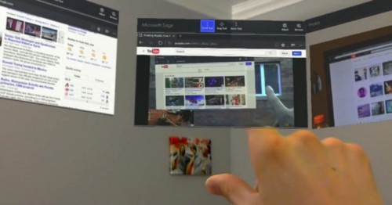

Welcome to the blog
Technology. AR. VR. Engineering. Business. Construction.
A day wearing augmented reality smart glasses
Written Feb 23, 2018
This article takes place in a future world where augmented reality (AR) smart glasses have replaced smartphones completely. I.e. only grandma still uses an old iPhone while everyone now uses smart glasses. This is still a number of years away, but many large mainstream companies like Apple and Google are working on augmented reality glasses, while there also are many smaller startups looking to force their way into the industry. AR smart glasses have the potential to impact our world similar to how the smartphone did, as backed up here by Apple CEO Tim Cook. The key benefit of smart glasses is that there will no longer be a need for display devices, creating freedom for your hands to interact with the world. TV’s, computer monitors, information boards, menus at restaurants, billboards playing generic ads will all be replaced by smart glasses. This article will step through a persons daily life and how it will be impacted by AR smart glasses.
The morning

You wake up in the morning and put on your smart glasses as you walk
to the kitchen for breakfast. Automatically, your glasses fire up with
whatever you want to see first in the morning. Perhaps the news and
highlights from the overnight EPL games, the Daily Telegraph, your
Facebook news feed or your email inbox. These will appear
semi-transparent in the left of your field of vision to allow you to
still interact with the world around you. You are reading through the
news as you use two hands to butter your toast and pour your coffee.
You are scrolling through Facebook while you are making your sandwich
for lunch.
Your loungeroom will also look a bit a different. There is no big
black TV dominating the loungeroom, because you don’t need a TV
anymore. You can sit down on the lounge and watch a movie on a 200
inch virtual screen that you can place wherever you want. You sit down
on the lounge with your daughter who’s watching something on a virtual
screen in her augmented reality glasses. You use your parental
controls to see that she’s watching cartoons, and then flick on the
Morning Show while you drink your coffee. Two people sitting next to
each other watching their own show, listening via their bone
conducting glasses.
Traditionally if someone wants to watch a movie that nobody else
does they need to go to another room or get a laptop and some
headphones which isolates them from the people in the room. AR glasses
mean everyone can be sitting in one room watching what they want on
the big screen.
Sports viewing could change overnight with the installation of
360-degree cameras in stadiums and on players. A person could be able
to get into the atmosphere of a game by sitting with the crowd on the
sideline, or really get into the players head by watching from a
helmet mounted camera; all while sitting in their living room.
As you walk past your study, your ‘computer’ that you work on looks a
bit different because there’s no monitors; just a keyboard and mouse.
Why have physical monitors when you can create twelve virtual screens
within your AR glasses in the touch of a button?
The commute

Now you’re ready to go, you hop into your car to drive to work. The
glasses automatically recognise your car and loads up your heads up
display, showing the ‘best’ directions to work that day, fuel level,
speed and traffic warnings from the government. I say the ‘best’
directions, because in a world where everyone is wearing AR smart
glasses, traffic data can be utilised in real time in order to provide
navigation that takes into account traffic. Waze is doing something
similar to this but without that extra layer of traffic data input its
purely just an estimate.
Or perhaps you’ve chosen to get a self-driving car, catch the
bus or train. No longer are you limited to looking at your little
phone screen for an hour. You could pop out a keyboard, get some
virtual monitors into your field of view and start the days work, no
longer limited by the size of a laptop screen. Or maybe you’d rather
watch a movie or TV series on a 50-inch screen.
The workday
You arrive at work and see that quiet guy from the digital marketing department who’s name you can never remember. But since you’re wearing smart glasses, facial recognition kicks in as he walks closer and a name tag appears above his head, plus a few notes about him that have been collected in your very brief conversations around the water cooler. You ask him how he went at his soccer competition that he mentioned, in passing, a month ago. This may sound creepy but you can modify your privacy settings as you please, allowing people to store only certain data about you, or none at all. Within an office scenario you can set up your virtual monitors with privacy settings according to what you’re working on. If you and your boss constantly look at each other screens to discuss ideas, you can set them as always having access to see your screen, but since your team is working on a classified government defence project, your screens are invisible to everyone else in the office. AR smart glasses will offer the biggest change for people that work in site roles. Traditionally the only link these people have to technology is via their smartphone. But in order to use their smartphone they need to put down their tools, pull their phone out of their pocket and find the information, then put the phone away and get back to work. Smart glasses can provide this information permanently in the corner of the persons vision and can provide feedback based on what the glasses are seeing. For example, a person may be installing reinforcement for a concrete slab for a new building. The glasses know the building plans (the latest model is always provided to employees), the stage of construction (from the project manager) and that the persons job is to lay reinforcement. The glasses notice that the bars being laid are tagged as 16mm diameter bars instead of the required 20mm diameter bars and alerts the person. The person checks this alert and it was right, saving the time of laying the wrong size reinforcement, pulling it all out and laying the correct reinforcement.
The lunchbreak
It’s your lunch break at work so you head down to the food court to buy something. The traditional menu boards behind the counter now show you personalised recommendations based on what you’ve ordered in the past or your preferences. For example, a vegetarian person lining up at McDonalds won’t see the traditional advertisements for a Big Mac when they look at the menu, they will only see tofu burgers and salads. The left-hand side of the menu board may show recently ordered items, while the next section recommends items you may like based on your previously ordered items. The next section can provide personalised offers and specials from the company. Businesses can target each person individually, thus fulfilling their needs better and creating an offering that is tailored to the persons needs and preferences. Physical shopping will become more like online shopping where users are tracked as they move around a website and allow businesses to see where they’re losing customers. Brick and mortar restaurants can now do something similar by seeing what items people are looking at and then what they decide to purchase, or not purchase. Based on this data they can then tailor the offering to each segment of customer. As you leave the shopping centre after lunch and walk out onto the street you look up the billboard across the road. Your glasses know that occasionally after lunch you grab a smoothie on the way back to work, so the billboard shows you a customised advertisement for a special $2 smoothie at the café at the base of your office building. The random person walking next to you has just left the gym, so the billboard shows them an advertisement for a protein shake from the take away shop on their walk home. The next person is on holiday and sees a special deal on a dolphin watching cruise. The options are endless. Traditional advertising that currently costs businesses thousands can be tailored in the way that Google tailors online advertising based on your web browsing history (among other things) and allows the success/failure of these ads to be tracked and measured. No longer is a business guessing how successful their $10,000 billboard advertisement was, because they have data showing how many people looked at their ad, and how many acted upon it. A world where people can put virtual objects anywhere will obviously get confusing, thus the ability to set your filters to only see what you want to see will be critical. Businesses may choose to make some extra money by covering their walls in advertisements for other businesses, similar to what websites do with banner ads.
Limitations
It will be many years before we can get a form factor like the one seen. There are many challenges which need to be overcome before this vision becomes a reality. Portable computing power technology needs to increase to the point where the equivalent of GTX 1070 graphics card can fit inside the standard form factor of glasses. Battery life will need to increase while reducing in size. Perhaps wireless charging will increase in range to the point where our glasses are constantly powered by a power bank in our pocket (http://www.wi-charge.com/), or maybe public wireless charging infrastructure will allow our glasses to be constantly charged. Sensor accuracy will also have to increase. In order for AR to work in the real world, the exact location of the glasses relative to objects needs to be known down to millimetre accuracy. If the augmented reality overlay on the world doesn’t quite fit in with the menu of the restaurant its going to break the illusion. At the moment GPS is only accurate to about 3–5 metres, but this is changing quickly with new technology set to be released soon which will increase this accuracy down to 30cm (https://goo.gl/yhGLv4). Its still not even close to what’s needed, but perhaps if this is combined with wifi tracking, accelerometer tracking, and visual marker tracking in the real world it might be enough. The world is going to look very different with the widespread adoption of AR smart glasses. By being aware of what may happen in the future, we can start to develop skills to exploit these trends. What do you think? Is this a reasonable assumption? Too crazy? Too conservative? Too creepy?